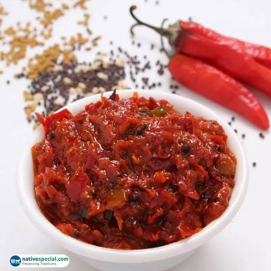

Ingredients:
- 500g fresh red chilies (washed and dried)
- 2 tbsp mustard seeds (coarsely ground)
- 1 tbsp fenugreek seeds (methi, roasted and ground)
- 2 tbsp salt (adjust to taste)
- 2 tbsp red chili powder (optional, for extra spice)
- 1 tbsp turmeric powder
- 1 tbsp fennel seeds (saunf, optional)
- ½ cup mustard oil
- 1 tbsp vinegar or lemon juice (for preservation)

Instructions:
Prepare Chilies –
Slit the red chilies lengthwise or cut them into pieces, removing excess seeds if you prefer less heat.Prepare Spice Mix –
Dry roast mustard seeds, fenugreek seeds, and fennel seeds, grind them coarsely, and mix with turmeric, salt, and chili powder.Stuff & Mix –
Stuff the spice mix into the slit chilies or coat the chopped chilies well with the spice blendAdd Oil & Vinegar –
Heat mustard oil slightly, let it cool, then mix it with the chilies along with vinegar or lemon juice.Store & Ferment –
Transfer to a sterilized jar and keep it in sunlight for 4-5 days, shaking it daily for even flavor development.